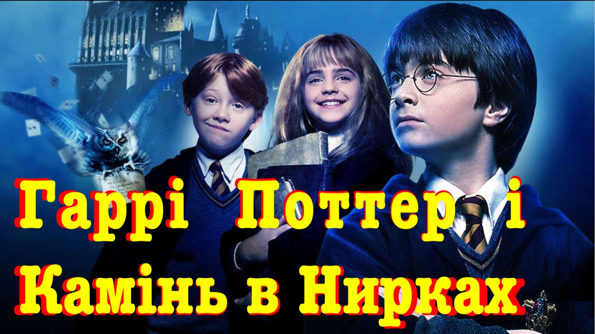

Додати фільм

Гаррі Поттер і Камінь у Нирках
2024 рік
Жанр:Комедія
Опис:
Серія переозвучок по всесвіту Гаррі Поттера які створюють іншу реальність з купою жартів, мемів, лайки, каламбурів і відсилок на українську культуру. Історія про ПереГаррі і його чарівний шлях в світі корупції, брехні і головного злодія Ботексоморта. Для цінувачів тонкої і простої адаптації та людей які хочуть подивитися старий та всім відомий фільм під новим кутом і з новими враженнями. Переклад ском представляє фільми: Гаррі Поттер і камінь в нирках (хронометраж 107хв), Гаррі Поттер і дитяча кімната міліції (хронометраж 111хв), Гаррі Поттер і в’язень Азербайджану (хронометраж 126хв). Преозвучка несе в собі гумор 18+ та ще й на любителя. Всі збіги з реальним життям випадкові, приємного перегляду:).